According to the claim of Professor Pinocchio, height of the
Fibonacci heap with the n- number of node is . The
professor’s statement needs to be proved wrong by showing that a
Fibonacci heap, containing one tree with a linear chain of n
nodes, can be created from a sequence of Fibonacci-heap
operations.
. The
professor’s statement needs to be proved wrong by showing that a
Fibonacci heap, containing one tree with a linear chain of n
nodes, can be created from a sequence of Fibonacci-heap
operations.
The demonstration is as follows:
• Suppose that is the Fibonacci heap. In order to demonstrate that the professor is wrong, there is a need to create an algorithm for Fibonacci heap such that the heap comprises of only one tree with n-1 nodes, starting with empty. After that one more node is added to this chain.
• First of all create a Fibonacci heap with the height of one with the root key R, such that R is the value of root node. Now add the nodes with the following keys: R–1 (a value less than the current root’s value), R+1 (a value greater than the current root’s value) and R–2 (a value which is twice less than the current root’s value. Finally remove the node with key R-2.
• Following are the steps of pseudocode to create the required Fibonacci heap. In the following algorithm, it is assumed that the number of nodes in the tree is greater than two.
Linear-heap (, R, n)
// start with empty
Linear-heap (, R+1, n–1)
// add a node with a value greater than the current root’s value
Insert (,min()+1)
// add a node with a value lesser than the current root’s minimum value
Insert (,min()–1)
// add a node with a value twice less than the current root’s minimum value
Insert (,min()–2)
// delete the node with minimum key from the
Deletemin ()
// assign the minimum node’s child node to the variable b
b = min ().secondchild
// decrease the node’s key value by two
Decreasekey (b, min ()–2)
Deletemin ()
return
Proof of Correctness:
Base case:
Hypothesis is correct for  as the
Fibonacci heap contains one tree with a linear chain of n
nodes.
as the
Fibonacci heap contains one tree with a linear chain of n
nodes.
Inductive process:
• Suppose that the above demonstration is true for the n=k. Now for n=k+1, the pseudocode creates a linear chain containing k nodes. After this two new child nodes x and y are added to the root node of the tree.
• The child node x has a key which is less than the minimum key.
• The child node y has a key which is greater than the minimum key.
• At last it adds the node R such that this node’s key is smaller than the minimum key. When the node R is deleted then there remain the chain of the k nodes containing x and y.
• Since the degree of the nodes x and y is zero so the nodes are joined. Now the chain having two element is obtained such that x becomes the root with the degree one.
Thus, chain having height two and other chain with height k are combined. Hence, removing the node y can give a linear chain with n nodes.
Hence, a Fibonacci heap, containing one tree with a linear chain of n nodes, can be created from a sequence of Fibonacci-heap operations and the professor Pinocchio is wrong.
Cascading-cut rule
Consider the generalization of the cascading-cut rule to erase a
vertex named x from its predecessor as soon as it does not
find its  child, for
some integer constant
child, for
some integer constant .
.
Assume that x is node in the Fibonacci heap whose degree is k represented as 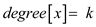that is the node x has k children, which are. If the order of connection of children of node x is the same as their order then,
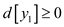and
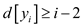
Here, 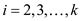
The variable represents the lowest measure of 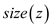for the whole node z, the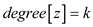. The size of a node x in the Fibonacci heap of degree k must be more than the 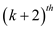Fibonacci number F that is,
……(1)
The Fibonacci number is defined as a number in a series in which each number is the sum of the previous two numbers. Now, from the equation (1)
But
……(2)
Now, use the generalized form, of equation (2)
……(3)
From equation (3) , take an example to find the k value,
where
If x be any node in an n-node Fibonacci heap,
and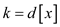. Taking the
base as , using
logarithms, get.
, using
logarithms, get.
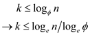
Here, is representing a constant value.
Thus, in the generalized form of cascading cut all numbers
satisfy 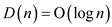
including. Thus, for
n node Fibonacci heap, 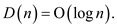